National Parks on rugged cases
Galaxy S26 Ultra · Tough Magnetic · $44.99
Choose a colorway to open its digital preview in the customizer.
Yosemite Half Dome at Sunset
Choose an edge-to-edge photograph or select Artwork only for the full image with clear space around it.
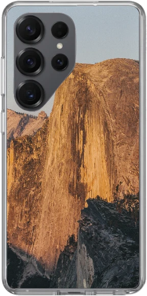
Sunset Granite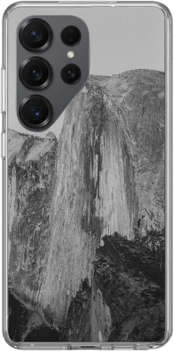
Silver Granite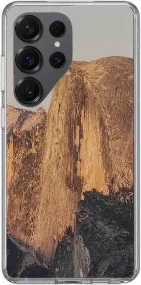
Warm Sierra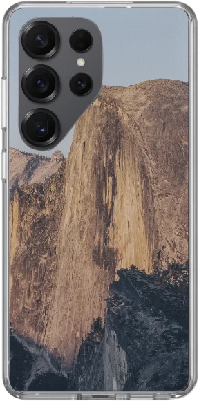
Blue Hour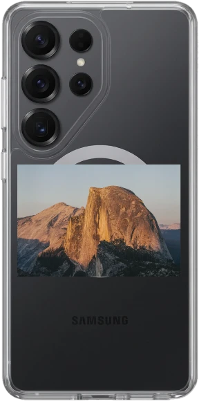
Artwork onlyPhotograph by Pierre Le Vaillant.
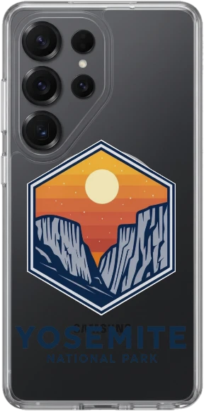
See Yosemite Valley on a landscape slate
Acadia Bass Harbor Head Light
Illustrated edition
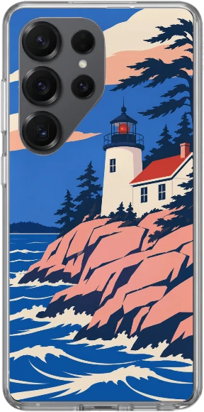
Atlantic Signal ↗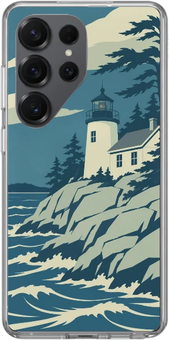
Sea Glass ↗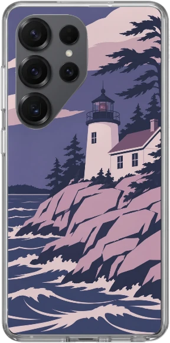
Wild Blueberry ↗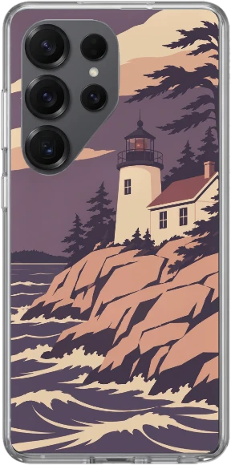
Rose Granite ↗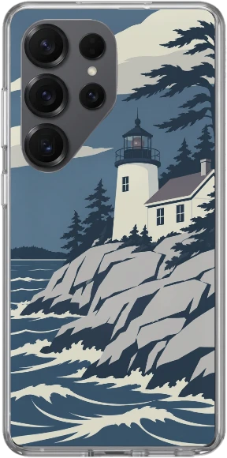
Fog Bell ↗Photographic edition
Bass Harbor Head Light · National Park Service photograph
Back to parks
Joshua Tree Hidden Valley
Illustrated edition
 Mojave Gold ↗
Mojave Gold ↗
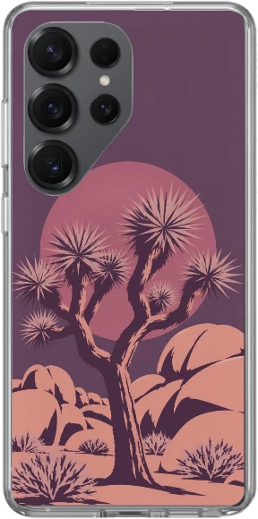
Desert Bloom ↗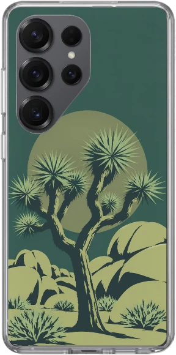
Yucca Mint ↗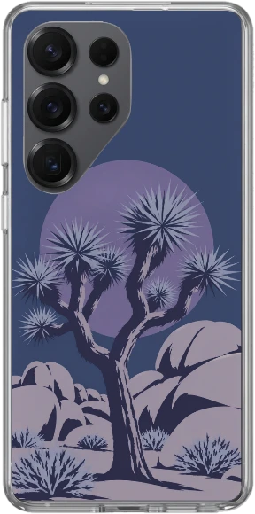
Cobalt Hour ↗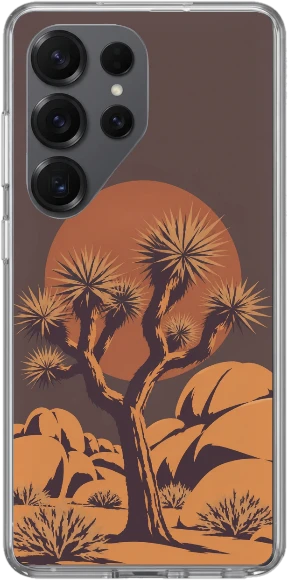
Camp Ember ↗Photographic edition
Hidden Valley Camp · National Park Service photograph
Back to parksOlympic Rialto Sea Stacks
Illustrated edition
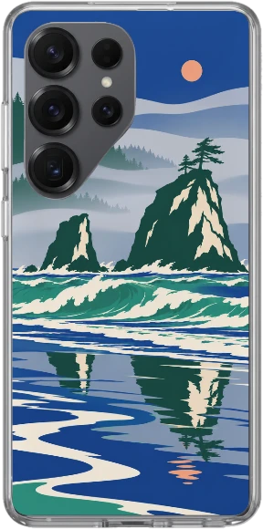
Pacific Jade ↗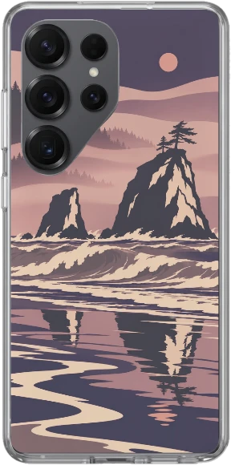
Salmon Run ↗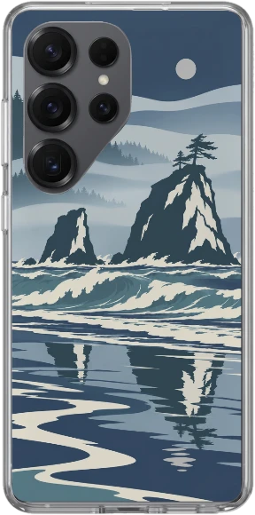
Storm Tide ↗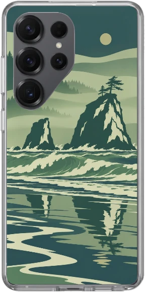
Kelp Forest ↗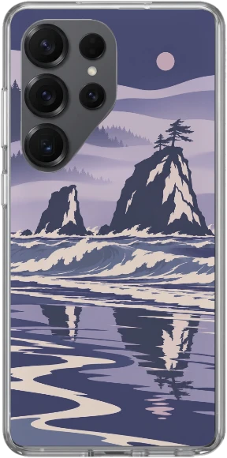
Violet Swell ↗Photographic edition
Split Rock at Rialto Beach · National Park Service photograph
Back to parks


.jpg){kind=link}


Grand Canyon Mather Point
Illustrated edition

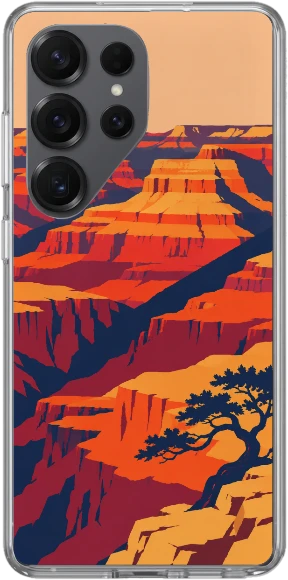
Redwall ↗
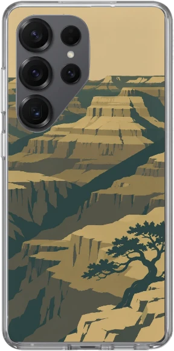
Juniper ↗
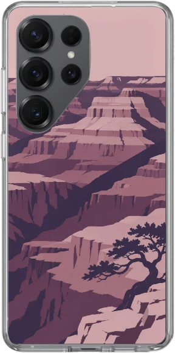
Desert Lilac ↗
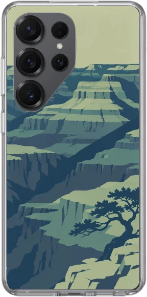
Turquoise Rim ↗
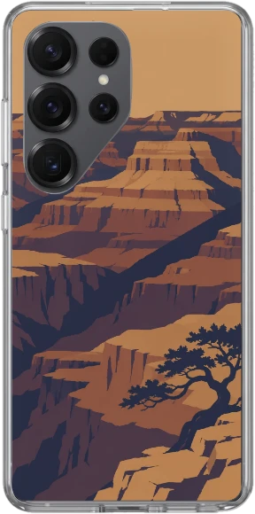
Copper Eclipse ↗Duck on a Rock · Photo edition
Photograph by NPS / Michael Quinn · cropped and toned · CC BY 2.0. See the Powell Point Sunset landscape slate.


Rocky Mountain Moraine Park Elk
Illustrated edition

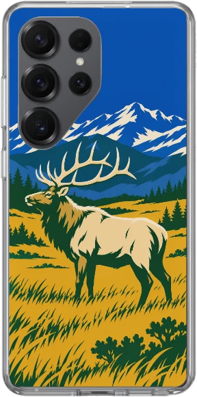
Golden Meadow ↗
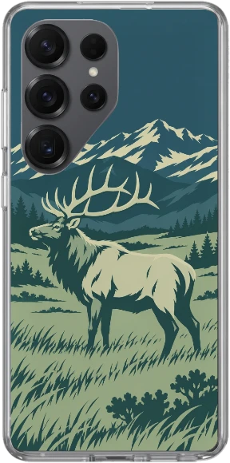
Blue Spruce ↗
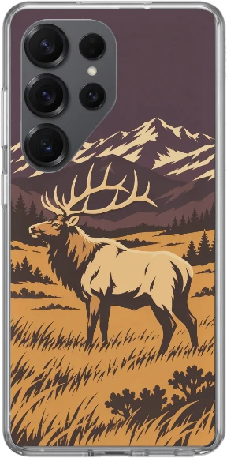
Aspen Ember ↗
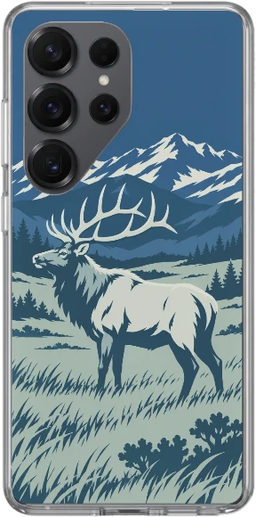
Alpine Frost ↗
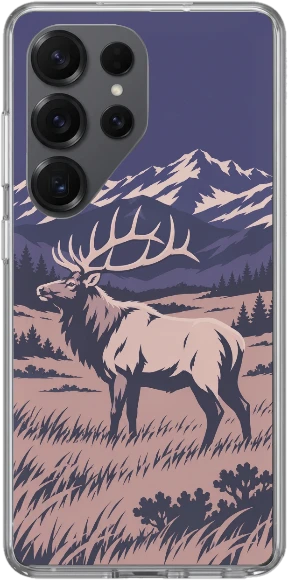
Twilight Heather ↗Dream Lake · Photo edition
Photograph by NPS / M. Reed. See the Sprague Lake landscape slate.


Great Smoky Mountains Newfound Gap
Illustrated edition
Back to parks


Grotto Falls · Photo edition
Photograph by Maggie Blake. See the Oconaluftee Sunrise landscape slate.


Yellowstone Grand Prismatic
Illustrated edition
Back to parks


Old Faithful · Photo edition
Photograph by NPS / Jacob W. Frank. See the Grand Prismatic Spring landscape slate.


Zion Watchman Bend
Illustrated edition
Back to parks


The Narrows · Photo edition
Photograph by Matt McK. See the Towers of the Virgin landscape slate.


Grand Teton Schwabacher Reflection
Illustrated edition
Back to parks


Jenny Lake · Photo edition
Photograph by NPS / Bonney. See the Snake River Overlook landscape slate.